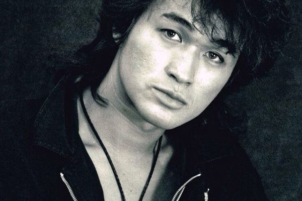

Виктор Цой
Ви́ктор Ро́бертович Цой (21 июня 1962, Ленинград, СССР — 15 августа 1990, 35-й километр трассы Р-126 «Слока—Талси», Тукумский район, Латвия) — советский рок-музыкант, автор песен, поэт, художник и киноактёр корейско-русского происхождения. Основатель и лидер рок-группы «Кино», входившей в «Ленинградский рок-клуб» и изначально имевшей название «Гарин и Гиперболоиды»; до этого являлся участником групп «Палата № 6» и «Автоматические удовлетворители». Один из самых влиятельных и известных советских рок-музыкантов; Цой сам писал все тексты и исполнял все песни на концертах группы «Кино», распавшейся после его смерти.
Первый альбом группы «Кино» вышел в 1982 году. Всего группа выпустила за период своего существования 8 альбомов; последний вышел уже после смерти лидера группы. Состав группы, при записи первого альбома состоявший только из Виктора Цоя и Алексея Рыбина, изменялся несколько раз и окончательно сложился к 1985 году; в него, кроме Цоя, вошли Юрий Каспарян, Георгий Гурьянов и Игорь Тихомиров.
Помимо музыкальной деятельности, Цой снялся в восьми кинофильмах. После исполнения роли Моро в фильме «Игла» журнал «Советский экран» назвал Цоя лучшим актёром 1989 года.
15 августа 1990 года Виктор Цой погиб в автокатастрофе на 35-м километре автодороги Р-126 «Слока—Талси» в Тукумском районе Латвии. Согласно официальной версии гибели, он заснул за рулём[источник?]. Похоронен на Богословском кладбище Ленинграда[⇨]. Считается[кем?], что смерть Цоя положительно повлияла на его популярность. Группа породила так называемый феномен «киномании»; сегодня творчество Цоя не утратило среди современных слушателей значимости и популярности